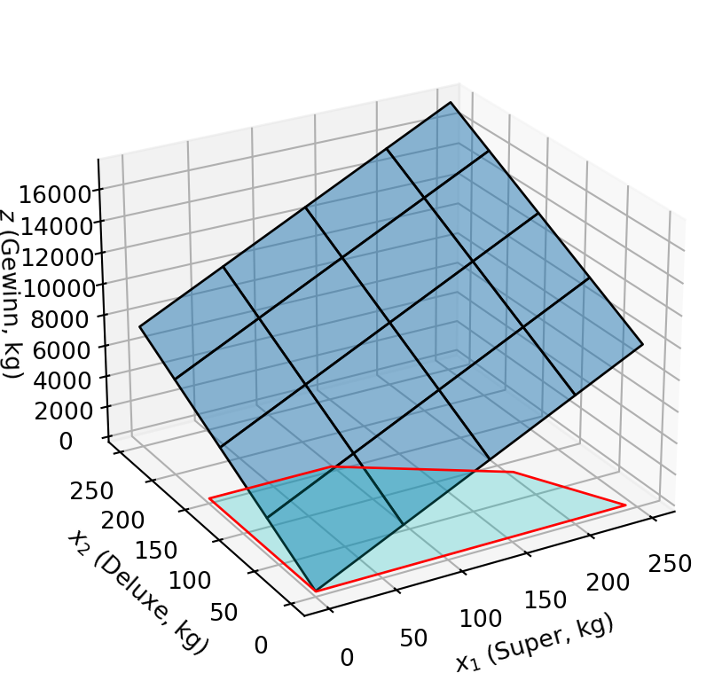

Als Beispiel werden wir ein kleines Café beraten. Das Café hat zwei Kaffeesorten: Espresso Super und Espresso Deluxe. Die Kaffeesorten bestehen aus Arabica und Robusta Bohnen. Super ist eine Mischung aus gleichen Teilen Arabica und Robusta, während in Deluxe 75% Robusta und 25% Arabica enthalten sind. Die Nachfrage nach Super ist unbegrenzt, aber die Nachfrage nach Deluxe ist auf 150 kg pro Woche begrenzt. Die Erlöse vom Verfauf von Super sind 40 €/kg und von Deluxe 50 €/kg. Wie viel von jeder Sorte sollte das Café kaufen, um den Gewinn zu maximieren?
Wir zeichnen all die Geraden, die zu den Gleichungen gehören. Wenn man das per Hand macht, ist es am leichtesten die Schnittpunkte jeder Gerade mit den Koordinatenachsen zu bestimmen.
0.5 x_1 + 0.25 x_2 = 120. Die Gerade schneidet die x_1-Achse bei x_1 = 120 / 0.5 = 240 und die x_2-Achse bei x_2 = 120 / 0.25 = 480.
0.5 x_1 + 0.75 x_2 = 160. Die Gerade schneidet die x_1-Achse bei x_1 = 160 / 0.5 = 320 und die x_2-Achse bei x_2 = 160 / 0.75 = 213.33.
x_2 = 150. Die Gerade schneidet die x_2-Achse bei x_2 = 150 und ist parallel zur x_1-Achse.
x_1 = 0. Diese Gerade stimmt mit der x_2-Achse überein.
x_2 = 0. Diese Gerade stimmt mit der x_1-Achse überein.
Auf diese Art und weise haben wir alle Eckpunkte der zulässigen Menge bestimmt: (0, 0), (240, 0), (200, 80), (95, 150), (0, 150) (Abbildung 7.2).
Code
vertices = [ [0, 0], [0, 150], [95, 150], [200, 80], [240, 0]]vertices_x = [v[0] for v in vertices]vertices_y = [v[1] for v in vertices]for v in vertices: ax.annotate(f"({v[0]}, {v[1]})", (v[0], v[1]), textcoords="offset points", xytext=(0, 5) )ax.fill(vertices_x, vertices_y, color='grey', alpha=0.3)display(fig)
Abbildung 7.2: Zulässige Menge für die Kaffeeproduktion
7.2 Die Zielfunktion
Um den optimalen Plan zu bestimmen, werden wir die Zielfunktion in die Grafik einzeichnen. Die Zielfunktion z(x_1, x_2) = 40 x_1 + 50 x_2 ist in Abbildung 7.3 dargestellt. Die Zielfunktion ist eine Ebene im dreidimensionalen Raum.
Code
import numpy as npimport matplotlib.pyplot as pltfrom mpl_toolkits.mplot3d import Axes3Dfrom mpl_toolkits.mplot3d.art3d import Poly3DCollection# Create the x, y, and z coordinate arraysx, y = np.meshgrid(np.linspace(0, 250, 20), np.linspace(0, 250, 20))z =40* x +30* y# Create a figurefig = plt.figure()ax = fig.add_subplot(111, projection='3d')# Add a 3D subplotax.plot_surface(x, y, z, rstride=5, cstride=5, edgecolor='k', alpha=0.5)ax.view_init(elev=25, azim=-120)ax.set_xlabel(r"$x_1$ (Super, kg)")ax.set_ylabel(r"$x_2$ (Deluxe, kg)")ax.set_zlabel(r"$z$ (Gewinn, kg)")vertices_3d = [v + [0] for v in vertices]# Create a Poly3DCollectionpoly = Poly3DCollection([vertices_3d], alpha=.25, linewidths=1, edgecolors='r', facecolors='c')# Add the Poly3DCollection to the axesax.add_collection3d(poly)

Abbildung 7.3: Die Zielfunktion des Kaffeeproblems
Diese Visualisierung ist hilfreich, um zu verstehen, wie die Zielfunktion aussieht, aber sie hilft uns nicht, das Maximum innerhalb der zulässigen Menge zu finden. Daher werden wir die Projektion der Zielfunktion auf die Ebene der zulässigen Menge verwenden.
Fixieren wir ein paar (beliebige) Niveaus des Gewinns und zeichnen wir die Geraden, die sie repräsentieren. Nehmen wir an, dass diese Niveaus 5000, 10000 und 12000 sind. Um diese Geraden zu zeichnen, müssen wir die Schnittpunkte dieser Geraden mit den beiden Achsen finden.
Alle Kombinationen von Super und Deluxe, die genau 5000 Gewinn erzielen, liegen auf einer Geraden, die durch die Gleichung
40x_1 + 50x_2 = 5000
gegeben sind.
Alle Kombinationen von Super und Deluxe, die genau 10000 Gewinn erzielen, liegen auf einer Geraden, die durch die Gleichung
40x_1 + 50x_2 = 10000
gegeben sind.
Beide Geraden verlaufen parallel zueinander, da der Anstieg der Geraden von den Koeffizienten von x_1 und x_2 in den Gleichungen abhängt und nicht von den Konstanten (5000 in der ersten Gleichung und 10000 in der zweiten).
7.3 Der Normalvektor
Alle Geraden bei unterschiedlichem Gewinn haben denselben Normalvektor. Der Normalvektor ist der Vektor, der senkrecht einer Gerade steht. Der Normalvektor ist der Koeffizientenvektor der Variablen in der Zielfunktion. In unserem Fall ist der Normalvektor (40, 50).
Um das zu begründen, betrachten wir die Gerade
40x_1 + 50x_2 = 5000
Diese Gerade schneidet die x_1-Achse bei x_1 = 5000 / 40 = 125 und die x_2-Achse bei x_2 = 5000 / 50 = 100. Aus diesen Zwei Punkten können wir die Parameterdarstellung der Geraden ableiten (für t \in \mathbb{R}).
Eine Gerade ist durch einen Punkt und eine Richtung definiert. Der Punkt ist der Schnittpunkt der Geraden mit der x_2-Achse, also (0, 100). Die Richtung ist der Vektor, der den Schnittpunkt der Geraden mit der x_1-Achse von dem Schnittpunkt der Geraden mit der x_2-Achse subtrahiert.
Zwei Vektoren sind orthogonal, wenn ihr Skalarprodukt 0 ist. Das Skalarprodukt zweier Vektoren ist die Summe der Produkte ihrer entsprechenden Koordinaten. So erhalten wir
import numpy as npimport matplotlib.pyplot as pltA = np.array([0, 100])B = np.array([125, 0])C = B - A# Create a figurefig, ax = plt.subplots()# Plot the vectorsax.quiver(0, 0, A[0], A[1], angles='xy', scale_units='xy', scale=1, color='r', label='A')ax.quiver(0, 0, B[0], B[1], angles='xy', scale_units='xy', scale=1, color='b', label='B')ax.quiver(A[0], A[1], C[0], C[1], angles='xy', scale_units='xy', scale=1, color='g', label='B-A')# Set the limits of the plotax.set_xlim([-2, 125])ax.set_ylim([-2, 125])# Add a legendax.legend(loc=0)
Lasst und die Geraden für 5000, 10000 und 12000 Gewinn zeichnen. Abbildung 7.4 zeigt die zulässige Menge und die Geraden für 3000, 50000 und 12000 Gewinn.
Abbildung 7.4: Die graphische Lösung des Kaffeeproblems
Die Gerade, die die zulässige Menge gerade noch berührt ist diejenige, die den maximalen Gewinn darstellt. Der Schnittpunkt der Geraden für 12000 Gewinn mit der zulässigen Menge ist der optimale Plan. In dieser Aufgabe ist das der Punkt (x^*_1 = 200, x^*_2 = 80) bei dem das Café 200 kg Super und 80 kg Deluxe kaufen sollte, um den maximalen Gewinn von 12000 € zu erzielen.
In dem optimalen Plan werden die ersten zwei Ressourcen vollständig ausgeschöpft, während die dritte Ressource nicht ausgeschöpft wird. Wie viel von der Nachfrage nach Deluxe bleibt unerfüllt?
import gurobipy as gpfrom gurobipy import GRB# Create a new modelm = gp.Model("Coffee Blending")# Create variablessuper_espresso = m.addVar(name="super_espresso")deluxe_espresso = m.addVar(name="deluxe_espresso")# Set objectivem.setObjective(40* super_espresso +50* deluxe_espresso, GRB.MAXIMIZE)# Add constraintsm.addConstr(0.5* super_espresso +0.25* deluxe_espresso <=120, "Arabica")m.addConstr(0.5* super_espresso +0.75* deluxe_espresso <=160, "Robusta")m.addConstr(deluxe_espresso <=150, "Nachfrage Deluxe")# Optimize modelm.optimize()# Print the solutionfor v in m.getVars():print(f"{v.varName}, {v.x}")
Restricted license - for non-production use only - expires 2025-11-24
Gurobi Optimizer version 11.0.0 build v11.0.0rc2 (linux64 - "Ubuntu 22.04.4 LTS")
CPU model: AMD EPYC 7763 64-Core Processor, instruction set [SSE2|AVX|AVX2]
Thread count: 2 physical cores, 4 logical processors, using up to 4 threads
Optimize a model with 3 rows, 2 columns and 5 nonzeros
Model fingerprint: 0xb45dd709
Coefficient statistics:
Matrix range [2e-01, 1e+00]
Objective range [4e+01, 5e+01]
Bounds range [0e+00, 0e+00]
RHS range [1e+02, 2e+02]
Presolve removed 1 rows and 0 columns
Presolve time: 0.00s
Presolved: 2 rows, 2 columns, 4 nonzeros
Iteration Objective Primal Inf. Dual Inf. Time
0 2.4000000e+04 1.325000e+02 0.000000e+00 0s
2 1.2000000e+04 0.000000e+00 0.000000e+00 0s
Solved in 2 iterations and 0.01 seconds (0.00 work units)
Optimal objective 1.200000000e+04
super_espresso, 200.0
deluxe_espresso, 80.0
8 Lösung mit gurobipy 2
In der Implementation oben haben wir die Koeffizienten des Modells fest im Code eingegeben. Das funktioniert in dieser kleinen Aufgabe, allerdings ist es nicht flexibel. Stellen wir uns vor, daß wie den optimalen Plan jeden Monat neu berechnen müssen, weil sich die Preise oder die Nachfrage ändern. In diesem Fall wäre es besser, wenn wir das Modell und die Koeffizienten trennen. Danach können das Modell mit verschiedenen Koeffizienten laufen lassen. Das ist auch nützlich, wenn wir das Optimum unter verschiedenen Szenarien berechnen wollen (unterschiedliche Preise, Nachfrage, Verfügbarkeit von Ressourcen, etc).
import pandas as pd# Define the data# Define the objective function coefficientsobj_c = pd.Series([40, 50], index=["Super", "Deluxe"], name="Gewinn")# Define the production constraintsproduction_constraints = pd.DataFrame( [ [0.5, 0.25, 120], [0.5, 0.75, 160], [0, 1, 150] ], columns=["Super", "Deluxe", "Available"], index=["Arabica", "Robusta", "Nachfrage Deluxe"])# Print the production constraintsproduction_constraints
Super
Deluxe
Available
Arabica
0.5
0.25
120
Robusta
0.5
0.75
160
Nachfrage Deluxe
0.0
1.00
150
import gurobipy as gpfrom gurobipy import GRBm = gp.Model("Coffee Blending")# Create variables# The data is given as a pandas DataFrame# With as many columns as there are espresso types# and one column for the right-hand side# All constraints are of the form a_1 * x_1 + a_2 * x_2 + ... <= RHSn_vars =len(obj_c)espresso = m.addVars(n_vars, name="espresso")# Set objectivem.setObjective(gp.quicksum([obj_c.iloc[i] * espresso[i] for i inrange(n_vars)]), GRB.MAXIMIZE)# Add constraintsfor row in production_constraints.itertuples(): m.addConstr( gp.quicksum([row[i +1] * espresso[i] for i inrange(n_vars)]) <= row.Available, row.Index )m.optimize()# Print the solutionfor v in m.getVars():print(f"{v.varName}, {v.x}")
Gurobi Optimizer version 11.0.0 build v11.0.0rc2 (linux64 - "Ubuntu 22.04.4 LTS")
CPU model: AMD EPYC 7763 64-Core Processor, instruction set [SSE2|AVX|AVX2]
Thread count: 2 physical cores, 4 logical processors, using up to 4 threads
Optimize a model with 3 rows, 2 columns and 5 nonzeros
Model fingerprint: 0xb45dd709
Coefficient statistics:
Matrix range [2e-01, 1e+00]
Objective range [4e+01, 5e+01]
Bounds range [0e+00, 0e+00]
RHS range [1e+02, 2e+02]
Presolve removed 1 rows and 0 columns
Presolve time: 0.00s
Presolved: 2 rows, 2 columns, 4 nonzeros
Iteration Objective Primal Inf. Dual Inf. Time
0 2.4000000e+04 1.325000e+02 0.000000e+00 0s
2 1.2000000e+04 0.000000e+00 0.000000e+00 0s
Solved in 2 iterations and 0.01 seconds (0.00 work units)
Optimal objective 1.200000000e+04
espresso[0], 200.0
espresso[1], 80.0
import gurobipy as gpfrom gurobipy import GRBdef build_espresso_blending_model(name: str, objective_coefficients: pd.Series, constr: pd.DataFrame) -> gp.Model:""" Builds an espresso blending optimization model using Gurobi. Parameters: - name (str): The name of the optimization model. - objective_coefficients (pd.Series): The coefficients of the objective function. - constr (pd.DataFrame): The constraints for the optimization problem. Returns: - mod (gurobipy.Model): The built optimization model. """# Setup the model mod = gp.Model(name)# Create variables# The data is given as a pandas DataFrame# With as many columns as there are espresso types# and one column for the right-hand side called "Available"# All constraints are of the form a_1 * x_1 + a_2 * x_2 + ... <= Available n_vars =len(objective_coefficients) espresso = mod.addVars(n_vars, name="espresso")# Set objective mod.setObjective( gp.quicksum([objective_coefficients.iloc[i] * espresso[i] for i inrange(n_vars)]), GRB.MAXIMIZE )# Add constraintsfor row in constr.itertuples(): mod.addConstr( gp.quicksum([row[i +1] * espresso[i]for i inrange(n_vars)]) <= row.Available, row.Index )# Return the modelreturn mod
m0 = build_espresso_blending_model("Coffee Blending", obj_c, production_constraints)m0.optimize()# Print the solutionfor v in m0.getVars():print(f"{v.varName}, {v.x}")
Gurobi Optimizer version 11.0.0 build v11.0.0rc2 (linux64 - "Ubuntu 22.04.4 LTS")
CPU model: AMD EPYC 7763 64-Core Processor, instruction set [SSE2|AVX|AVX2]
Thread count: 2 physical cores, 4 logical processors, using up to 4 threads
Optimize a model with 3 rows, 2 columns and 5 nonzeros
Model fingerprint: 0xb45dd709
Coefficient statistics:
Matrix range [2e-01, 1e+00]
Objective range [4e+01, 5e+01]
Bounds range [0e+00, 0e+00]
RHS range [1e+02, 2e+02]
Presolve removed 1 rows and 0 columns
Presolve time: 0.00s
Presolved: 2 rows, 2 columns, 4 nonzeros
Iteration Objective Primal Inf. Dual Inf. Time
0 2.4000000e+04 1.325000e+02 0.000000e+00 0s
2 1.2000000e+04 0.000000e+00 0.000000e+00 0s
Solved in 2 iterations and 0.01 seconds (0.00 work units)
Optimal objective 1.200000000e+04
espresso[0], 200.0
espresso[1], 80.0